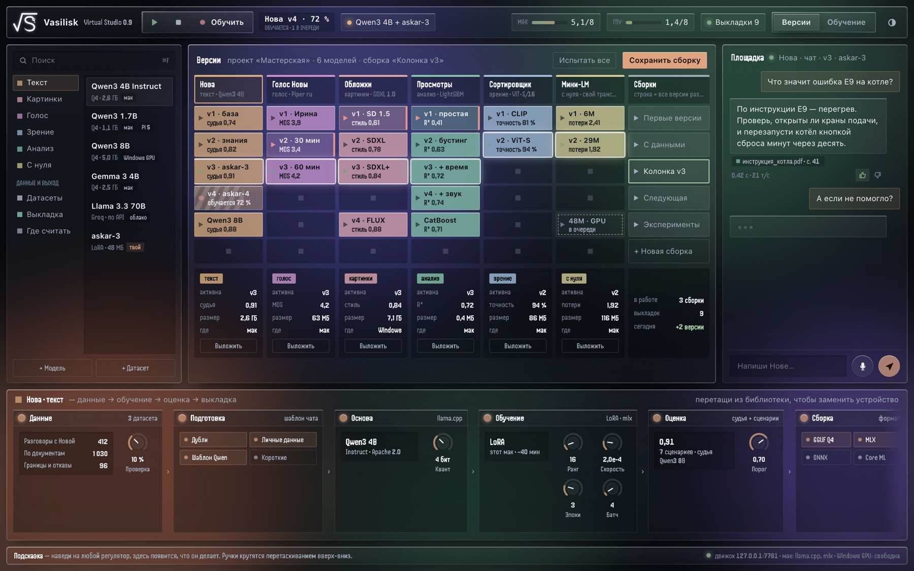
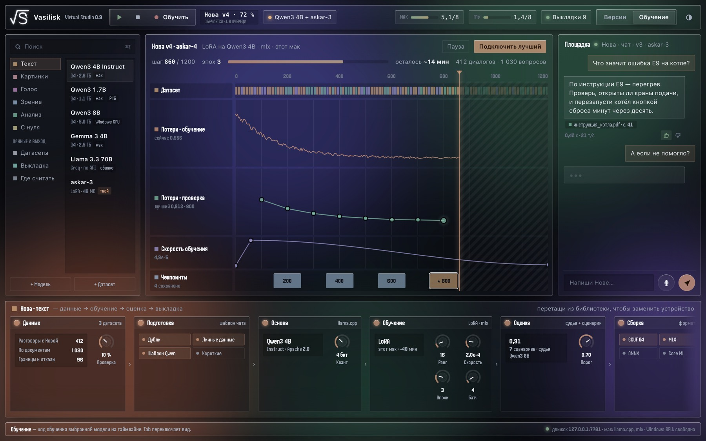
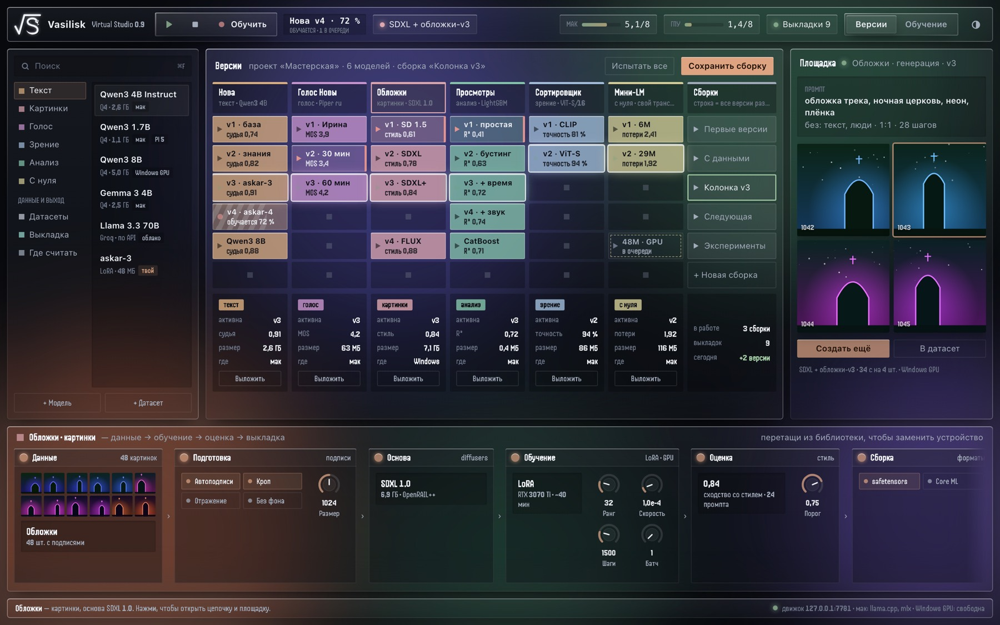
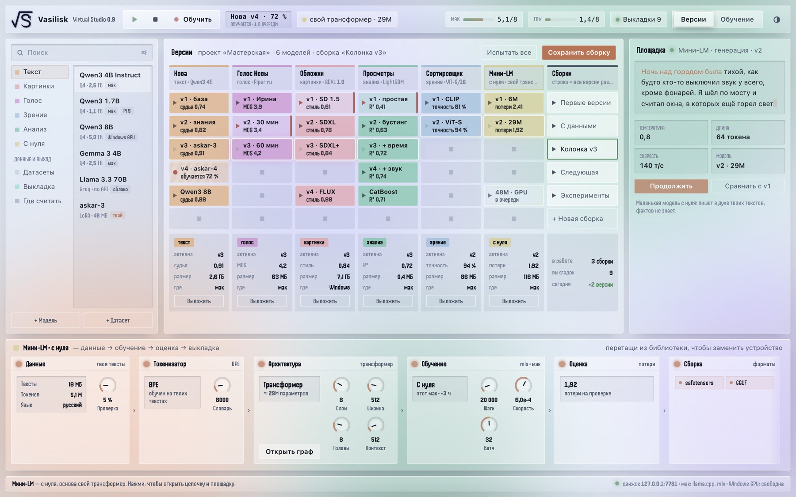
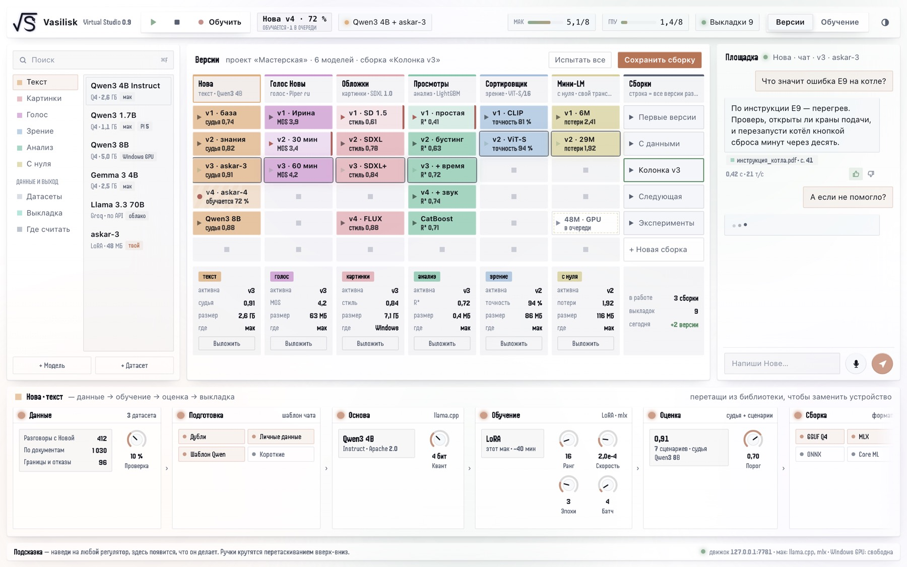

Vasilisk
Студия, где ты сам обучаешь свой ИИ
Текст, картинки, видео, музыка, голос, зрение — на своём маке, на своих данных. Как Ableton Live, только вместо дорожек со звуком — модели, а вместо клипов — их версии.
01Настольная программа · macOS
Полный путь модели — в одном окне
Данные, обучение, оценка, версии, выкладка. Ничего не уезжает в облако, если ты сам этого не захотел: модель живёт на твоём маке, учится на твоих примерах и отвечает, пока нет интернета.
- Дорожкамодель любого типа
- Клипеё обученная версия с оценкой
- Эффектыменяют ответ без обучения
- Сборканабор версий, включается разом
02Одна студия
Восемь видов ИИ
Наведи — кольцо повернётся к тебе.
03Настоящее окно
Так выглядит студия
Тяни мышью или листай — снимки повернутся.





04Промо
Тридцать секунд про Vasilisk
Наведи — пойдёт превью без звука. Нажми — смотреть целиком.
05Журнал студии
У нас есть свои статьи об ИИ
Разбираем вирусные ролики и научные работы: что правда, что преувеличено и что из этого мы пробуем в Vasilisk.
06Скоро в Dev 0.9.1
ИИ, который спит и помнит
Готово в коде, проверяем перед выпуском. Как это работает и что получилось в опытах, рассказываем в статьях.
- СонНочью модель переносит разговоры дня в новый слой и не забывает старое. Утром проверяет себя и показывает, что выучила.
- ЧатОтдельный экран для разговора с моделью. Днём общаешься, ночью она засыпает сама по расписанию.
- .vskСвой файл модели: ночи отдельными слоями, дневник, порог «не знаю», характер и параметры ответа. Любую ночь можно забыть даже после переноса на другой мак.
Код открыт
Открытая студия Vasilisk X под MPL 2.0, полная сборка Dev и релизы — всё на GitHub.
github.com/VasiliskStudio